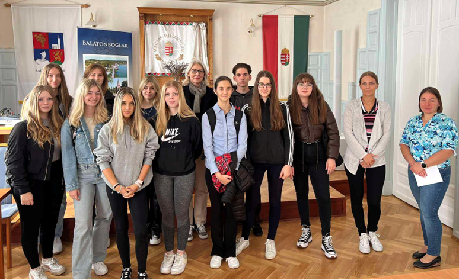

2024. szeptember 13-án ellátogattunk az Balatonboglári Közös Önkormányzati Hivatalba. Cé-lunk, hogy megismerjük a titkári munka alapjait. Dr. Kelemen Csilla és munkatársai vezettek körbe minket, hogy bemutassák a polgármesteri hivatalt, illetve az önkormányzat működését.
Megtudtuk, hogy a polgármester feladata (a képviselő-testülettel közösen) az adott település irányítása. Meghatározza a hivatal feladatait, előkészíti és végrehajtja a döntéseket. Az alpol-gármester feladata a polgármester helyettesítése, munkájának segítése. Az alpolgármestert a polgármester javaslatára a képviselő-testület választja titkos szavazással.
A képviselő-testület feladatköre szerteágazó. Az önkormányzati ügyek szabályozása, a helyi adófajták és annak mértékének meghatározása. Munkájukat a pénzügyi bizottság segíti. A jegyző vezeti a hivatalt és gondoskodik arról, hogy az önkormányzat ügyei mindig jogszerűen, a törvények alapján folyjanak. Őt a polgármester nevezi ki, határozatlan időre.
Az balatonboglári önkormányzato két fő osztályt hoztak létre: pénzügyi és igazgatási osztályt. Az igazgatási osztályt az aljegyző vezeti, akinek az a feladata, hogy előkészítse a képviselő-testület üléseit és a különböző szakmai ügyeket koordinálja ilyenek például az anyakönyvveze-tés, valamint a szociális ügyek.
A pénzügyi osztályt a pénzügyi osztályvezető vezeti. A pénzügyhöz tartozik minden anyagi forrásokkal kapcsolatos dolog, a könyvelés, helyi adók, utalások és bérszámfejtés.
A polgármesteri hivatalban minden dolgozónak meg van a maga speciális területe. Valaki tit-kárnői feladatokat lát el, mások ügyviteli feladatokat végeznek, másvalaki jegyzőkönyvet ké-szít. Az alkalmazottak közül kulcspozíciót betöltő személy a titkárnő. Ő a polgármester jobb keze, aki mindenbe belelát és segít a polgármesternek. A titkárnő Dolgos Anita volt, akinek főbb feladata, hogy elvégezze az adminisztratív tevékenységeket, segítse a vezetők munkáját, kapcsolatot tartson a cég belső és külső partnereivel, kezelje a dokumentumokat, intézze a le-velezést, találkozókat szervezzen és fogadja a telefonhívásokat.
A másik szintén kulcsfontosságú személy a jegyzőkönyvvezető. Feladata, hogy minden zárt és nyilvános ülésen jegyzőkönyvet írjon. A jegyzőkönyv típusától függ, hogy mikor és mennyit kell dolgoznia. Egy rövidített jegyzőkönyvnél csak a lényeget kell leírni, míg egy fontosabb tárgyalásnál mindent bele kell írni, ami ott elhangzik, vagy történik (pl.: taps). Az esemény valós idejű rögzítésére hang és képfelvevő készülékeket használnak, így később mindent pon-tosan le tud írni.
Tanulmányi kirándulásunk során Ágoston Éva jegyzőkönyvvezetővel személyesen is találkoz-hattunk, aki részletesen tudott nekünk beszélni a jegyzőkönyvvezetésről és annak írásáról. A jegyzőkönyv kötött és az ülés fontosságától függ a hossza, az összetétele és a formája. Felve-szik a testületi ülést magnó segítségével, utána pedig az elhangzottakat a jegyzőkönyvvezető meghallgatja és jegyzőkönyvbe foglalja. A jegyzőkönyvet a polgármester, a jegyző és a képvi-selők közül kettő ember (ők hitelesítik) írják alá. A tárgyalás közben megkérdezik a jelenlévők véleményét. A vélemények elhangzása után a testület határozatot hoz, ami a jegyzőkönyv fon-tos része.
Minden előterjesztést, ami felmerült, megvitatnak és csak aztán érhet végez az ülés. Ezek után már csak a jegyzőkönyvvezető a fentebb leírt dolgokat alkalmazva elkészíti a végleges, formá-ba öntött jegyzőkönyvet. A jegyzőkönyvet szigorúan tilos átírni, hiszen ez közokirat hamisítás, ami büntetőeljárással jár. A www.balatonboglar.hu weboldalon megtalálhatjuk a jegyzőköny-veket. Ezek mellett YouTube-ra is feltöltik, ahonnan vissza is lehet hallgatni
Miután megismerkedtünk a jegyzőkönyvvezetés részleteivel, Oláh Eszter iktató és irattáros mutatta, meg hogy működik az iratkezelés a gyakorlatban. Ehhez az ASP iratkezelő szakrend-szert használja. A rendszerben iratot egyedi azonosítóval látják el, amely alapján könnyen nyomon követhető. Ezt nevezik iktatószámnak. Ezután megadják az irat tárgyát, küldőjét, címzettjét, érkezési vagy keletkezési dátumát, majd az iratot továbbítják az illetékes osztály vagy személy felé, aki felelős annak kezeléséért. Az irattal kapcsolatos teendőket meghatároz-zák, ez lehet válaszadás, intézkedés vagy archiválás. Az iratokat az ügyintézés alatt könnyen elérhető helyen tartják vagy az ügyintézőné, vagy a kézi irattárban. Az ügy lezárása után az iratok hosszú távú megőrzése céljából archiválásra kerülnek. Az iratokat az Iratkezelési Sza-bályzatban meghatározott ideig tárolják, a már nem releváns iratok selejtezhetőek, azaz meg-semmisíthetők (elégetik őket). A selejtezhető iratokat iratfolyóméterben adják meg. Egy irat-folyóméter azt jelenti, hogy az iratokat egymás mellé állítva egy folyóméter hosszúságú helyet foglalnak el a polcon. A selejtezésről és a megsemmisítésről is jegyzőkönyvet kell írni, amit a levéltárnak kell küldeni.
Szakmai kirándulásunk utolsó állomásaként meglátogattuk a polgármesteri hivatallal szemben lévő Fischl-házat, ahol a képviselő-testületi üléseket tartják, valamint a polgármesteri hivatal pincéjében lévő irattárat, ahol a leselejtezett, megsemmisítésre váró iratokat tárolják. A Fischl- ház tárgyalóterme szép és elegáns volt. A tér kialakítása, a könnyen mozgatható bútorhat lehe-tővé teszi, hogy könnyedén átrendezzék, például egy házasságkötéshez, majd egy utána kö-vetkező más témájú megbeszéléshez.
A látogatás során szerzett tapasztalatok megesősítettek abban, hogy a polgármesteri hivatal titkársága nemcsak a napi adminisztrációs feladatokat látja el, hanem kulcsszerepet játszik a hivatali munka gördülékeny működésében is. A titkárnői munka precizitása és hatékony-sága biztosítja, hogy a hivatal minden ügyfele gyors és pontos tájékoztatást kapjon, mi-közben a háttérben zajló koordinációval és szervezéssel hozzájárulnak a közösség igényei-nek kielégítéséhez.